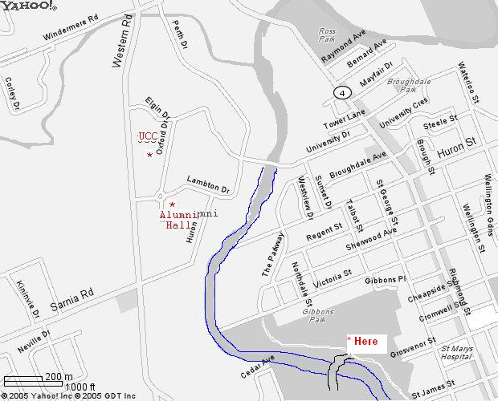

MAPS -
SUMMER MEETINGS
Gibbons Park
Gibbons Park is a city park that
winds it's way along the Thames River just south and east of
campus. To find our juggling spot follow the bike path to
approximately 500 feet north of the swimming pool. Just off the
path is a small valley which provides a shady spot to juggle with some
moderate protection from the wind. Keep in mind that there is no
shelter here if the weather starts to turn bad, however, so meetings
are weather dependent.
UCC -
Concrete Beach
Meetings are held on the grassy area just off of the concrete beach in
front of the UCC. In case of bad weather, we can move our
meetings indoors. Parking can be found at
the D B Weldon parking lot and in the Social Science parking
lot. I don't know how parking works on campus during the summer.
